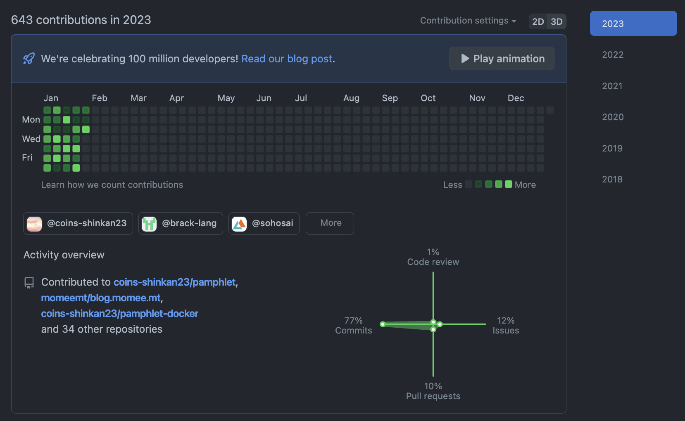

2023年1月
こんにちは！少し前に新年のお祝いをしていたはずなのにもう1ヶ月が過ぎてしまいました。
1月をふりかえります。
今月の週報
総じて
- 年始は意識が高かったけど特に後半から疲れて生活習慣が乱れた
- 新歓パンフレット・jsysの活動が主だった
読んだ
来月はもう少し読書の時間を作ります。朝とか良さそう。
- The SATySFi bookの第8章までを読み進めた
- OOSCの第1章を読んだ
- 詳解Rustプログラミングの第5章までを読み進めた
- 実例によるPureScriptの第4章までを読み進めた
開発
新歓パンフレットのCI/CD、クラスファイルの実装、RustやNixの勉強が中心だった。
1ヶ月連続で何かしら計算機について意識し続けることができた[1]のは大きな進歩だと思う。
生活では色々と失敗があったけど、去年はこういう継続的な取り組みができなかったので素直に嬉しく感じている。
来月は、以下の目標を持ちつつ開発に取り組みたい。
- nix-shellを開発で使えるようにする
- VM環境を整備する
- dotfilesを整備する
- jsysで上手く回せるようにプロジェクトマネジメントの勉強をする
- 毎日少しでもRustのドキュメントを読み進める
- satysfi-aosagiを整備してレポート執筆環境を整える
その他、中旬から春休みに入るので自宅にNAS環境を整えたり、メールサーバーの移行をしたい。
春ネスぺを申し込んだ[2]ので、今年はインフラに詳しくなるぞ！という意気込みがある。
生活
22:30に寝て6:00に起きる、みたいな理想的な生活ができた日は少なかった。
課題や締切に忙殺されることもあったけど、なんか基本的には早寝早起きができていないことが原因がちだと思う[3]。
来月はとにかく睡眠をきちんと取って、その上で料理とか洗濯とかに興味を強めていきたい。
目標
先月の週報で立てていた目標は雰囲気で毎回考えていたけど、今月からは月報で立てた大きめの目標を分割してクリアしていく感じにしたい。
初めて試すので、上手くいかなかったらまたやり方を考えようと思う。
- 新歓パンフレットの完成
- 新歓パンフレットの入稿
- QRのフロント側を完成させ、バックエンドもUUIDの登録・物品モデリングの実装を終わらせる
- SOSの開発を進め、進捗管理を行う。優先度が高いタスクのうち、6割を終了させる。
- 28日中、22日は22:30までに就寝する
- 28日中、14日は6:30までに布団を出る
- 布団にスマホを持ち込まず、ベッドの延長コードを切る
- 日報の執筆・歯磨き・課題などを22時までに終わらせる
- YouTubeにアクセスしない
- 性格的に0か100かの方がうまく行きやすく、週3まで、というような制限の方が逆に難しかったので
- nix-shellを利用した開発を行う
- VM環境を整備する
- 局員のVM環境を整えて、sos23-backendの開発が行えるようにする
- dotfilesを整備する
- 毎日少しでもRustのドキュメントを読み進める
- satysfi-aosagiを整備してレポート執筆環境を整える
- ネスペの勉強をする
- コンピューターネットワーク 第5版を読み終える
- OOSCを第10章まで読み進める
- ゼロから学ぶRustを読み終えて、線形型システムについて勉強する
- っぽくなるデザインを読み終える
- 並行プログラミング入門を読み終える
- 金フレ 1〜400
脚注
- ブログのおかげで毎日コミットする癖が付いた
- 投機的発言。もう眠いので明日しようと思っている。
- 気分的にも。早寝早起きが上手くできると他のことも上手くできる感覚がある